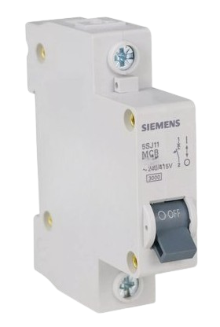
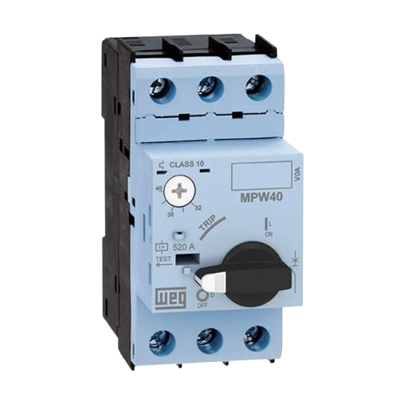
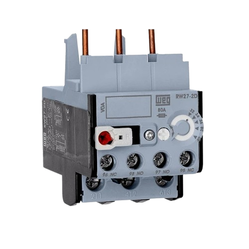

Proteção Elétrica
DSJUNTORES
Em qualquer instalação elétrica, residencial ou industrial, a segurança é fundamental. Nesse contexto, o disjuntor é um dos dispositivos mais importantes para proteger pessoas, equipamentos e patrimônios.
O que é um Disjuntor?
O disjuntor é um dispositivo eletromecânico responsável por proteger a instalação elétrica contra curtos-circuitos e sobrecargas. Quando ocorre alguma falha na rede, ele interrompe automaticamente a passagem de corrente elétrica, evitando danos aos equipamentos, incêndios e choques elétricos.
Além da proteção automática, o disjuntor também pode ser utilizado para desligar manualmente a energia, facilitando manutenções com mais segurança.
Aplicações
Em residências, os disjuntores são utilizados em circuitos de iluminação, tomadas, chuveiros e ar-condicionado. Já na indústria, são empregados na proteção de máquinas, motores e sistemas trifásicos, garantindo maior segurança e evitando danos aos equipamentos e à instalação elétrica.

DISJUNTOR MOTOR
Definição
O disjuntor motor é um dispositivo de proteção desenvolvido especialmente para motores elétricos. Ele protege o motor contra sobrecargas, curtos-circuitos e falta de fase, interrompendo automaticamente o circuito quando detecta condições que possam causar danos ao equipamento.
Aplicações
O disjuntor motor é amplamente utilizado em instalações industriais e comerciais para a proteção de motores elétricos trifásicos, bombas, ventiladores, compressores, esteiras transportadoras e outras máquinas. Além da proteção, também permite o acionamento e desligamento manual do motor de forma segura.

RELÉ TÉRMICO
O relé térmico é um dispositivo de proteção usado principalmente em motores elétricos para evitar danos causados por sobrecarga (corrente acima do valor nominal durante um período prolongado).
Conceito
O relé térmico é um dispositivo de proteção utilizado em circuitos elétricos para proteger motores contra sobrecarga. Ele funciona com base no aquecimento de uma lâmina bimetálica, que se deforma quando a corrente ultrapassa o valor permitido, interrompendo o circuito.
Aplicações
É usado principalmente em painéis de comando de motores elétricos, como em bombas, compressores, ventiladores, esteiras transportadoras e máquinas industriais, protegendo os equipamentos contra aquecimento excessivo e possíveis danos.
